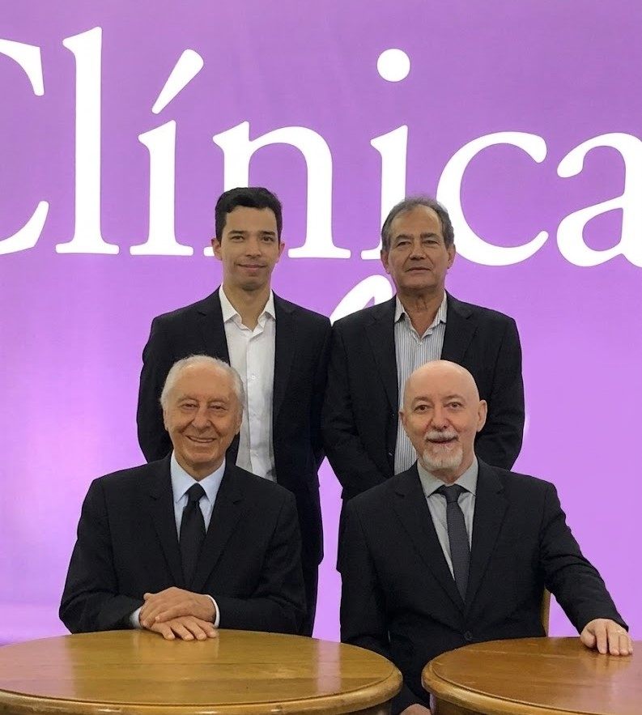
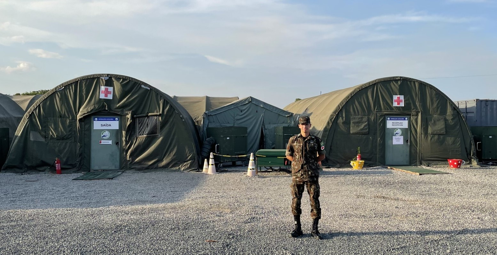

Cardiologia com história, dedicação e presença
Uma trajetória construÃda com estudo, rigor e o cuidado que atravessa gerações. Cardiologia com raÃzes sólidas e compromisso genuÃno com cada paciente.

Uma trajetória construÃda com estudo, rigor e o cuidado que atravessa gerações. Cardiologia com raÃzes sólidas e compromisso genuÃno com cada paciente.

Sobre o médico
Médico Cardiologista · CRM-GO 26.140 · RQE 18.597 e 21.367
Médico formado pela PontifÃcia Universidade Católica de Goiás (PUC-GO), com Residência Médica em ClÃnica Médica e Cardiologia no Hospital de Urgências de Goiás.
Durante a pandemia de COVID-19, atuou por seis meses na linha de frente nas Unidades de Pronto Atendimento de Goiânia.
Serviu por um ano como Tenente Médico temporário do Exército Brasileiro, no Comando de Operações Especiais, em Goiânia.
Faz parte do Departamento Médico do Vila Nova desde 2020, atuando no atendimento dos atletas do time profissional e da base.
Como quarta geração de cardiologistas da famÃlia Porto, acredita que medicina se faz com conhecimento, dedicação e presença. Hoje carrega esse legado com o compromisso de oferecer o mesmo cuidado que sempre viu em casa.
Agendar com o Dr. FredericoExército Brasileiro
Durante o seu ano de serviço como Tenente Médico temporário do Exército Brasileiro, atuou em diversas missões no Batalhão de Apoio às Operações Especiais, prestou apoio ao Curso de Ações de Comandos no Rio de Janeiro, e participou da Operação Acolhida na fronteira com a Venezuela, realizando atendimento médico aos refugiados venezuelanos.

Cardiologia do Esporte
Membro do Departamento Médico do Vila Nova desde 2020, o que começou como um desafio se tornou uma das experiências mais ricas de sua carreira. No clube aprendeu que cuidar do coração de um atleta exige um olhar diferente, mais atento e preciso. Hoje é responsável pelos casos cardiológicos do time profissional e da base. Esse contato com o esporte transformou a forma como enxerga a cardiologia e trouxe esse cuidado para os pacientes fora do campo.


As consultas
Avaliação completa da saúde cardiovascular, interpretação de exames e elaboração de plano terapêutico individualizado.
Avaliação de atletas profissionais, amadores e recreativos para iniciar a prática de atividade fÃsica com segurança.
Avaliação periódica completa com eletrocardiograma, ecocardiograma e exames laboratoriais integrados.
Avaliação cardiológica completa para pacientes que serão submetidos a procedimentos cirúrgicos, garantindo segurança e redução de riscos no perioperatório.
Acompanhamento regular de diversas doenças cardiovasculares como hipertensão arterial, doença arterial coronariana, arritmias cardÃacas e insuficiência cardÃaca.
Acompanhamento particular e personalizado de pacientes internados com objetivo de otimização do tratamento e alta precoce.
Onde me encontrar
Consultas presenciais em três endereços estratégicos em Goiânia, com agendamento fácil e rápido.
Convênios
Atendemos os principais convênios de saúde de Goiânia e também consultas particulares.
O Hospital Santa Helena é conveniado com diversos planos de saúde. Consulte a recepção do hospital para verificar se o seu plano está disponÃvel.
Entre em contato
Entre em contato pelo WhatsApp de cada local para agendamento rápido e direto.